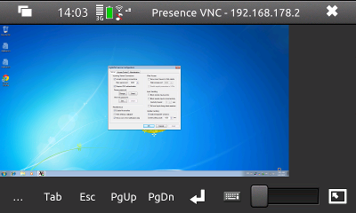

Features
- Viewport can be dragged around without using scrollbars
- Touchpad-like mouse input: Tap the screen for a single click, tap twice for a double click, single tap plus dragging motion to drag objects on the remote desktop
- Fit remote desktop to screen
- Configurable zoom buttons
- Portrait mode support
- Support for server-initiated connections (Listen for Incoming Connections)
Download
Presence VNC can be installed from Maemo Extras, older versions and source code are available from the project filelist.
Help
Connecting
Enter the hostname or IP address of the computer running the VNC server. You can specify the display number after a colon. (e.g.: hostname:1) If no display is given, 0 will be assumed. (A number ≥100 will be interpreted as a port number. Otherwise, Presence VNC will connect to port 5900 + display.)
Pressing the arrow symbol next to the input field will bring up the list of recently used hosts. Additionally, you can select the Listen for incoming connections option to accept a "reverse" connection from the server. You can specify the port to listen on after clicking the Listen button. Servers that support this feature include x11vnc (-connect), RealVNC and TightVNC (right-click on icon -> "Add New Client").
Please note that all data transferred using VNC (except your password) is unencrypted. That means your session could be viewed/recorded and even taken over by someone else on your network. To prevent this, you can use SSH or VPN to create an encrypted tunnel for your VNC connection. (HOWTO (SSH, Linux))
Main window

Toolbar
- ...
- Shows a menu of various other keys unavailable from hardware/on-screen keyboard. Please note that the modifier keys (Win or Alt) will stay pressed until you press them a second time in the ... menu.
- Tab, Esc, PgUp, PgDn, Return
- Send Tab, Escape, Page Up, Page Down or Return, respectively.
- On-screen keyboard
- Opens the on-screen keyboard (OSK). If the hardware keyboard is open, this button has no effect.
Limitations: The OSK Return key does not work, please use the toolbar button instead. The Backspace button will only delete text still visible in the OSK, you may need to use its counterpart in the ... menu or the hardware keyboard. - Zoom slider
- You can change the zoom level by dragging the slider. At its lowest setting (left), the remote display will be resized to fit the available screen space; the highest setting (right) will double the size of the remote display. Double clicking the slider will set the zoom to 100%.
- Fullscreen
- Hides menu and toolbar. To leave fullscreen mode, press the button in the lower right corner (visible for a few seconds after each mouse/keyboard input).
Preferences

- Screen rotation
- Wether you want automatic screen rotation when the device is rotated or fixed portrait/landscape mode. Default: Automatic
- Left/Right zoom button
- Allows you to assign actions to the zoom/volume buttons of the N900. The default actions are left and right click, respectively.
- Disable tapping
- If this option is checked, tapping your finger on the displayed remote desktop will not produce mouse clicks. You can still click using the zoom/volume buttons (see above). This option is off by default.
- Always show local cursor
- When enabled, Presence VNC will show a small rectangle to indicate the cursor position. This option is especially useful on slow connections (laggy remote cursor). Zooming will not affect the size of the local cursor. Default: off
- Zoom to cursor
- When enabled, zooming will keep the cursor near to the middle of the screen. Otherwise, the center of the currently visible area will be kept visible. Default: on